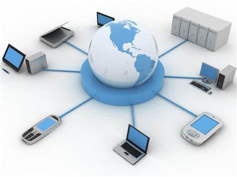

Bidang Industri

teknologi industri adalah penggunaan teknik ilmu dan teknologi manufaktur supaya produksi lebih cepat, lebih sederhana, serta lebih efisien. dalam hal program studi teknologi industri ini mencakup intruksi teori optimasi, faktor manusia, perilaku organisasi dan yang menjadi aspek utama untuk menjadi seorang ahli teknologi industri yaitu perencanaan dan proses manufaktur serta perlengkapan. selain itu, seorang ahli teknologi industri juga berperan dalam mengimplementasikan rancangan dan proses tertentu dalam sebuah industri, dalam hal ini perlu melibatkan manajemen, operasi, dan perawatan sistem operasi dan perawatan sistem operasi yang kompleks. Pada dasarnya semua persoalan yang bisa dipandang sebagai suatu sistem yang integral akan dapat diselesaikan dengan peng-analisaan Teknik Industri.
Dalam dunia Pendidikan Sarjana yang memilih Jurusan Teknik Industri perlu mengetahui apa tujuan dari jurusan tersebut. Adapun Tujuan yang hendak di capai dengan adanya jurusan teknologi industi adalah membentuk sarjana teknik yang:
1. Mempunyai pengetahuan dan kemampuan yang tinggi dalam hal perencanaan, pengorganisasian dan pengoperasian sistem industri secara luas serta kompleks, yang melibatkan manusia, material, mesin dan peralatan, informasi & energi secara integral.
2.Mempunyai kemampuan untuk meningkatkan efektivitas dan effisiensi sebuah sistem produksi di industri dengan memanfaatkan serta mengaplikasikan ilmu-ilmu sosial (ekonomi khususnya), dan ilmu keteknikan lainnya secara bersama-sama guna menganalisa, memperhitungkan, serta mengevaluasi hasil yang dicapai oleh sistem produksi tersebut secara optimal.
3.Mampu berpikir khas yang menekankan pada upaya pencapaian hasil proses produksi yang optimal dan pengelolaan faktor-faktor produksi dengan didukung oleh pertimbangan kelayakan teknis dan kelayakan ekonomis.
Bidang Ekonomi

Dalam perekonomian suatu negara, teknologi informasi mulai dirasa mempunyai peran yang penting dalam perekonomian suatu negara karena dengan berkembangnya teknologi informasi, perekonomian suatu negara mulai memperlihatkan perubahan yang cukup signifikan. Banyak hal yang dirasa berbeda dan berubah dibandingkan dengan cara yang berkembang sebelumnya. Saat sekarang ini jarak dan waktu bukanlah sebagai masalah yang berarti untuk mendukung pertumbuhan ekonomi, berbagai aplikasi terciptauntuk memfasilitasinya. Perkembangan teknnologi juga membawa pengaruh yang signifikan dalam kegiatan ekonomi dan bisnis. Perekonomian suatu negara dapat dilihat dari perkembangan teknologi informasi dan komunikai di negara tersebut. Semakin tinggi perkembangan teknologi informasi maka semakin tinggi pula pertumbuhan ekonomi negara tersebut. Namun perkembangan teknologi informasi ini juga memiliki sisi negatif, dimana banyak penyalahgunaan teknologi dalam melakukan tindak kriminal.
Adapun peran Teknologi Informasi dan Komunikasi dalam bidang ekonomi antara lain sebagai berikut :
1. E-Banking
E-banking didefinisikan sebagai penghantaran otomatis jasa dan produk bank secara langsung kepada nasabah melalui elektronik, saluran komunikasi interaktif. Nasabah dapat mengakses e-banking melalui piranti pintar elektronik seperti komputer/PC, PDA, ATM, atau telepon.
2. E-Commerce
Perdagangan elektronik atau e-commerce adalah penyebaran, pembelian, penjualan, pemasaran barang dan jasa melalui sistem elektronik seperti internet atau televisi, www, atau jaringan komputer lainnya. E-commerce dapat melibatkan transfer dana elektronik, pertukaran data elektronik, sistem manajemen inventori otomatis, dan sistem pengumpulan data otomatis.
Keuntungan dari e-commerce adalah dapat menjual produknya kepada lebih banyak orang, perusahaan tidak perlu membuka banyak cabang distribusi, biaya yang dikeluarkan perusahaan dapat dikurangi karena perusahaan tidak perlu menyediakan toko yang besar dan pegawai yang banyak, karena biaya yang dikeluarkan perusahaan dapat dikurangi, maka harga barang dapat dijual lebih rendah, barang yang dijual lebih murah dapat meningkatkan daya saing perusahaan, konsumen tidak perlu mendatangi toko untuk mendapatkan barang.
Konsumen cukup ke Internet dan memesan barang, barang akan diantar ke rumah, pembeli dapat menghemat waktu dan biaya transportasi dalam berbelanja, konsumen mempunyai banyak pilihan, karena dapat membandingkan semua produk yang ada di internet, konsumen dapat membeli barang yang terdapat di negara lain dan harga barang yang dibeli menjadi lebih rendah.
Bidang Telekomunikasi
Teknologi komunikasi terdiri dari perpaduan dua kata yaitu teknologi dan komunikasi. Teknologi pada dasarnya berarti kumpulan teknik, namun dalam konteks ini, teknologi merupakan kondisi pengetahuan manusia yang terkait dengan cara menggabungkan hal dari berbagai sumber sehingga dapat menghasilkan barang atau jasa yang bertujuan membantu memenuhi kebutuhan manusia. Sementara itu, komunikasi memiliki arti sebagai alat penghubung antar manusia.Seperti yang sudah sempat disinggung sebelumnya, sejak pertengahan abad ke-20, manusia sudah berusaha keras untuk menciptakan beragam alat yang berkaitan dengan teknologi komunikasi modern. Seiring dengan berkembangnya zaman maka bisa dipastikan alat teknologi telekomunikasi menjadi semakin canggih.
Setidaknya ada 4 media atau alat komunikasi modern yang tercipta dari masa ke masa, seperti yang akan dijelaskan berikut ini.
1. Telepon
Alat komunikasi yang satu ini memiliki jangkauan yang sangat jauh bukan hanya sebatas antar kota saja, bahkan juga bisa dijadikan sebagai alat komunikasi antar negara. Meskipun demikian, seiring dengan perkembangan zaman, banyak orang yang mulai meninggalkan telepon karena dianggap kurang praktis, sebab tidak bisa dibawa kemana-mana.
2. Komputer
Pada dasarnya, komputer merupakan salah satu alat komunikasi yang berguna sebagai pengolah data untuk menjadi informasi. Penggunaannya yang multifungsi itulah menjadikan komputer/laptop memang sangat membantu kehidupan masyarakat modern.
3. Televisi
Televisi juga merupakan sebuah alat/media komunikasi penyampai pesan/informasi dalam kehidupan modern. Informasi yang disampaikan melalui televisi berbentuk audio visual, sebab selain suara, televisi juga dapat menampilkan gambar bergerak.
Segala informasi dapat tersampaikan melalui televisi, mulai dari informasi politik, kesehatan, sosial, budaya hingga hiburan.
4. Internet
Seiring dengan semakin berkembangnya zaman, maka teknologi telekomunikasi dan informasi pun juga berkembang salah satunya yang paling terbaru adalah internet. Seperti diketahui bahwa segala sesuatunya sekarang serba dilakukan secara online. Jadi, tidak mengherankan bila sarana komunikasi yang paling banyak digunakan saat ini membutuhkan internet sebagai penghubungnya.
Berkat internet yang berperan sebagai alat komunikasi, maka komunikasi pun jadi semakin lancar dan efisien. Contoh paling nyata dari efisiensi penggunaan internet untuk berkomunikasi dan menyebarkan informasi adalah adanya sosial media yang semakin beragam jenisnya, misal seperti Facebook, Twitter, WhatsApp dan lain sebagainya.